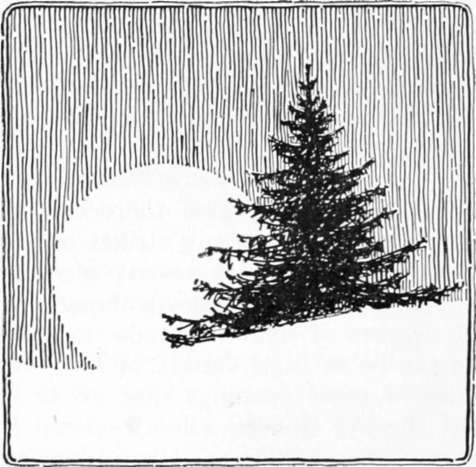
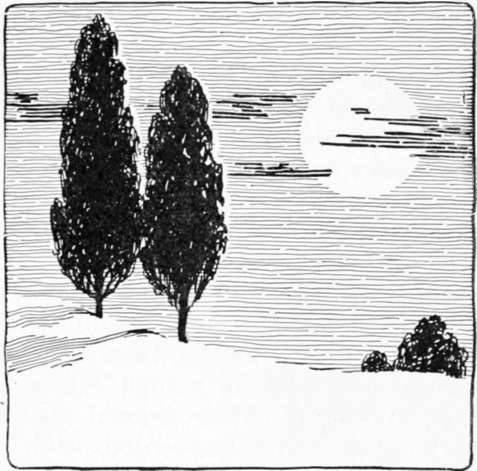

On Wood And Plantations. Part 10
Description
This section is from the book "Landscape Gardening", by Andrew Jackson Downing. Also available from Amazon: Landscape Gardening.
On Wood And Plantations. Part 10
Spiry-topped trees (Fig. 17) are distinguished by straight leading stems and horizontal branches, which are comparatively small, and taper gradually to a point. The foliage is generally evergreen, and in most trees of this class hangs in parallel or drooping tufts from the branches. The various evergreen trees, composing the spruce and fir families, most of the pines, the cedar, and among deciduous trees, the larch, belong to this division. Their hue is generally much darker than that of deciduous trees, and there is a strong similarity, or almost sameness, in the different kinds of trees which may properly be called spiry-topped.
From their sameness of form and surface this class of trees, when planted in large tracts or masses, gives much less pleasure than round-headed trees; and the eye is soon wearied with the monotony of appearance presented by long rows, groups, or masses, of the same form, outline, and appearance; to say nothing of the effect of the uniform dark color, unrelieved by the warmer tints of deciduous trees. Any one can bear testimony to this, who has travelled through a pine, hemlock, or fir forest, where he could not fail to be struck with its gloom, tediousness, and monotony, especially when contrasted with the variety and beauty in a natural wood of deciduous, round-headed trees.
Fig. 17. Spiry-topped Tree.
Although spiry-topped trees in large masses cannot be generally admired for ornamental plantations, yet they have a character of their own, which is very striking and peculiar, and we may add, in a high degree valuable to the Landscape Gardener. Their general expression when single or scattered is extremely spirited, wild, and picturesque; and when judiciously introduced into artificial scenery, they produce the most charming and unique effects. The situations where they have most effect is among rocks and in very irregular surfaces, and especially on the steep sides of high mountains, where their forms and the direction of their growth seem to harmonize with the pointed rocky summits. Fir and pine forests are extremely dull and monotonous in sandy plains and smooth surfaces (as in the pine barrens of the southern states); but among the broken rocks, craggy precipices, and otherwise endlessly varied surfaces (as in the Alps, abroad, and the various rocky heights in the Highlands of the Hudson and the Alleghanies, at home) they are full of variety.
It will readily be seen, therefore, that spiry-topped trees should always be planted in considerable quantities in wild, broken, and picturesque scenes, where they will appear perfectly in keeping, and add wonderfully to the peculiar beauty of the situation. In all grounds where there are abruptly varied surfaces, steep banks, or rocky precipices, this class of trees lends its efficient aid to strengthen the prevailing beauty, and to complete the finish of the picture. In smooth, level surfaces, though spiry-topped trees cannot be thus extensively employed they are by no means to be neglected or thought valueless, but may be so combined and mingled with other round-headed and oblong-headed trees, as to produce very rich and pleasing effects. A tall larch or two, or a few spruces rising out of the centre of a group, give it life and spirit, and add greatly, both by contrast of form and color, to the force of round-headed trees. A stately and regular white pine or hemlock, or a few thin groups of the same trees peeping out from amidst, or bordering a large mass of deciduous trees, have great power in adding to the interest which the same awakens in the mind of the spectator.
Fig. 18. Oblong-headed Tree.
Care must be taken, however, that the very spirited effect which is here aimed at, is not itself defeated by the over-anxiety of the planter, who, in scattering too profusely these very strongly marked trees, makes them at last so plentiful, as to give the whole a mingled and confused look, in which neither the graceful and sweeping outlines of the round-headed nor the picturesque summits of the spiry-topped trees predominate; as the former decidedly should, in all scenes where an expression of peculiarly irregular kind is not aimed at.
The larch, to which we shall hereafter recur at some length, may be considered one of the most picturesque trees of this division; and being more rapid in its growth than most evergreens, it may be used as a substitute for, or in conjunction with them, where effect is speedily desired.
Oblong-headed trees show heads of foliage more lengthened out, more formal, and generally more tapering, than round-headed ones. They differ from spiry-topped trees in having upright branches instead of horizontal ones, and in forming a conical or pyramidal mass of foliage, instead of a spiry, tufted one. They are mostly deciduous; and approaching more nearly to round-headed trees than spiry-topped ones do, they may perhaps be more frequently introduced. The Lombardy poplar may be considered the representative of this division, as the oak is of the first, and the larch and fir of the second. Abroad, the oriental cypress, an evergreen, is used to produce similar effects in scenery.
The great use of the Lombardy poplar, and other similar trees in composition, is to relieve or break into groups, large masses of wood. This it does very effectually, when its tall summit rises at intervals from among round-headed trees, forming pyramidal centres to groups where there was only a swelling and flowing outline. Formal rows, or groups of oblong-headed trees, however, are tiresome and monotonous to the last degree; a straight line of them being scarcely better in appearance than a tall, stiff, gigantic hedge. Examples of this can be easily found in many parts of the Union where the crude and formal taste of proprietors, by leading them to plant long lines of Lombardy poplars, has had the effect of destroying the beauty of many a fine prospect and building.*
Continue to: